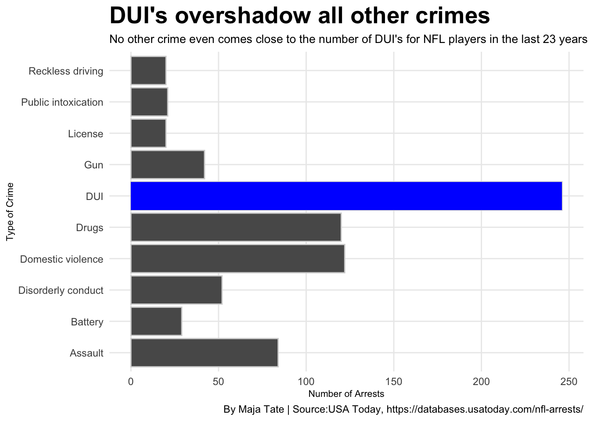
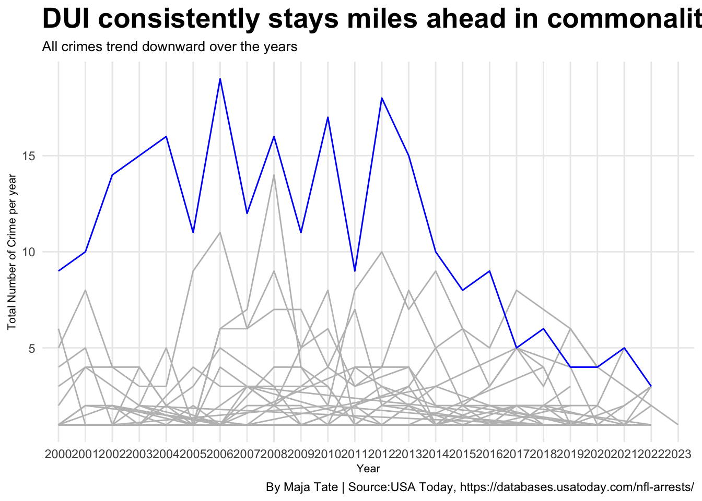

Code
library(tidyverse)
library(ggrepel)
library(gt)
library(tibble)Maja Tate
April 16, 2023
Year <- arrests %>%
separate(Date, into = c("Month","Day","Year"), sep = "/")
TotalCrimes <- Year %>%
group_by(Category) %>%
summarize(Total = n()) %>%
top_n(10) %>%
arrange(desc(Total))
dui <- TotalCrimes %>%
filter(Category == "DUI")
TotalYears <- Year %>%
group_by(Year, Category) %>%
summarize(Total = n())
DUI <- TotalYears %>% filter(Category =="DUI")
Top<- Year %>%
group_by(`First Name`,`Last Name`,Position) %>%
summarize(TotalName = n()) %>%
arrange(desc(TotalName))
Most<-Top %>%
filter(TotalName > 4)
Mutated <- Most %>%
mutate( Name = str_c(`First Name`,`Last Name`, sep = " ",collapse = NULL))
NewMutated <- Mutated[, c(5,3,4)]The NFL does a lot to try to keep a good reputation, from following along with social media trends to emphasizing their political correctness. Although no matter how hard the organization tries, they can’t and won’t always be able to keep athletes in line with these ideals.
The only time athlete arrests make the news are when there are serious crimes, such as murders, rapes, and domestic violence, or when popular, well-known athletes commit any kind of crime. Most news organizations covered instances such as Adrian Peterson’s child abuse case or Davante Adam’s interesting assault charge, but not many heard about Adam Jones’ fourth assault charge of his career or Kenny Still’s disorderly conduct arrest in 2020.
USA Today has been keeping a running database of NFL player arrest records since 2000. Counting anything from arrests to citations to warrants and more. The database goes into detail about the case and the outcomes.
DUI’s are easily the most common crime throughout the last 23 years’ worth of NFL arrest data. DUI’s double in total arrests over the next most common crime, domestic violence, with 246 to 122. Overall, DUI’s make up approximately 31% of the top 10 most common crimes.
ggplot() + geom_bar(data=TotalCrimes, aes(x=Category, weight = Total),color = "light grey")+
coord_flip() +
geom_bar(data = dui, aes(x=Category, weight=Total), fill = "blue")+
labs(
x = "Type of Crime",
y = "Number of Arrests",
title = "DUI's overshadow all other crimes",
subtitle = "No other crime even comes close to the number of DUI's for NFL players in the last 23 years",
caption = "By Maja Tate | Source:USA Today, https://databases.usatoday.com/nfl-arrests/"
)+
theme_minimal() +
theme(
plot.title = element_text(size = 20, face = "bold"),
axis.title = element_text(size = 8),
plot.subtitle = element_text(size=10),
panel.grid.minor = element_blank()
)
DUI’s have continuously stayed the most prominent crime amongst NFL players until a dip in 2017 but reemerged as the top in 2021. Although overall, arrest trends have begun to decrease since 2014. Overall arrest numbers have dropped in recent years without a clear answer to why.
ggplot() +
geom_line(data=TotalYears,aes(x=Year, y=Total, group=Category), color= "grey")+
geom_line(data=DUI,aes(x=Year, y=Total, group=Category), color="blue")+
labs(
x="Year",
y="Total Number of Crime per year",
title="DUI consistently stays miles ahead in commonality",
subtitle="All crimes trend downward over the years",
caption="By Maja Tate | Source:USA Today, https://databases.usatoday.com/nfl-arrests/"
) +
theme_minimal() +
theme(
plot.title = element_text(size = 20, face = "bold"),
axis.title = element_text(size = 8),
plot.subtitle = element_text(size=10),
panel.grid.minor = element_blank()
) 
Most of the time, when a player is arrested for something, they tend not to get caught doing it again, but there are a few outliers who don’t learn from their mistakes. Over twelve years from 2005 to 2017, cornerback Adam Jones was arrested 10 times. Interestingly, none of Jones’ arrests had to do with DUI’s.
Jones played for both the Tennesse Titans and the Cincinnati Bengals. His crimes consisted of four assaults, two drug, one alcohol, disorderly conduct, coercion with a gun, and public intoxication.
NewMutated %>%
gt() %>%
cols_label(
TotalName = "Total Arrests",
Name = "Name",
Position = "Position"
) %>%
tab_header(
title = "Cornerback topples league with 10 total arrests in career",
subtitle = "Most athletes learned their lessons after one arrest, but not all"
) %>% tab_style(
style = cell_text(color = "black",weight = "bold",align = "left"),
locations = cells_title("title")
) %>% tab_style(
style = cell_text(color = "black", align = "left"),
locations = cells_title("subtitle")
)%>%
tab_source_note(
source_note = md("**By:** Maja Tate | **Source:** USA Today, https://databases.usatoday.com/nfl-arrests/")
)%>%
tab_style(
locations = cells_column_labels(columns = everything()),
style = list(
cell_borders(sides = "bottom", weight = px(3)),
cell_text(weight = "bold", size=12)
)
) %>%
opt_row_striping() %>%
opt_table_lines("none")%>%
tab_style(
style = list(
cell_fill(color = "blue"),
cell_text(color = "white")
),
locations = cells_body(
rows = Name == "Adam Jones")
)| Cornerback topples league with 10 total arrests in career | ||
| Most athletes learned their lessons after one arrest, but not all | ||
| Name | Position | Total Arrests |
|---|---|---|
| Adam Jones | CB | 10 |
| Aldon Smith | LB | 8 |
| Kenny Britt | WR | 7 |
| Chris Henry | WR | 6 |
| Letroy Guion | DT | 5 |
| Malik McDowell | DT | 5 |
| By: Maja Tate | Source: USA Today, https://databases.usatoday.com/nfl-arrests/ | ||
Although these run ins with the law may seem very common, most NFL players never get involved with the law for anything. Overall crime trends have started to go down in the NFL in the last seven years, possibly due to increased acknowledgement and punishments by league owners and officials.